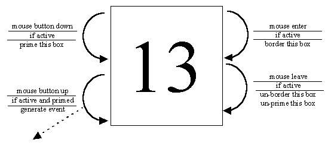

The DayBox - STD

The DayBox has no direct knowledge about being highlighted (selected). All it knows is
that when it is active and clicked upon it should dispatch an event to its
listener; as a consequence it may become selected but this knowledge is
maintained by its instance (MonthPanel) parent.
This component has to explicitly dispatch events to its listener so
as to be able to interact with other components in a similar manner
to the pre-declared components.